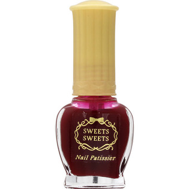

返回列表
产品名称：スウィーツ スウィーツ ネイルパティシエ 56

シャンテイ スウィーツ スウィーツ ネイルパティシエ 56 ＿
メーカー シャンテイ
JANコード 4901604554141
商品の特徴
ツヤ・耐久性・塗りやすさに優れたネイルカラー
- 成分・分量
- 酢酸ブチル、酢酸エチル、ニトロセルロース、（アジピン酸／ネオペンチルグリコール／無水トリメリト酸）コポリマー、クエン酸アセチルトリブチル、イソプロパノール、香料、ステアラルコニウムベントナイト、（スチレン／アクリレーツ）コポリマー、アクリレーツコポリマー、ブタノール、オキシペンゾン-1、シリカ、炭酸プロピレン、ジアセトンアルコール、赤220、リン酸、黄4、赤201
- 用法及び用量
- -